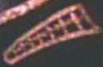

| SEQ |
16 |
| SAT |
08.02.1988 |
| I1 |
20.07.1992 |
| COD |
ts |
| DVD |
4 |
| VHS |
8 (PG) |
| STO |
Michael Michaelian |
| TPY |
Michael Michaelian
Dorothy C. Fontana |
| REG |
Rob Bowman |
| MUS |
George Romanis |
| GUS |
Governatore Karnas |
Michael Pataki |
|
Amm. Mark Jameson |
Clayton Rohner |
|
Anne Jameson |
Marsha Hunt |
| IT |
Guerra privata |
| ES | Un período demasiado corto |
FR |
Un trop court moment |
| DE |
Die Entscheidung des Admirals (La decisione
dell'ammiraglio) |
| BR | Um Breve Regresso |
| JP |
Oinaru Tsugunai (Great Payment) |
| SCR |
06.10.1987 |
Data Stellare 41309.5: Per sedare una rivolta su
Mordan IV viene
richiesto all'Enterprise di riportare sul pianeta l'Ammiraglio
Jameson,
l'unico uomo che già una volta era riuscito a riportare la pace tra questa
gente. Ma questo fatto si rivela solamente un pretesto per vendicare odi
antichi.
- Non appare Wesley Crusher.
-
L'ammiraglio ha dei gradi alquanto inusuali sulla spalla destra
dell'uniforme: sono una specie di triangolo con quattro pallini interni
ricamati sul tessuto; gli stessi gradi si rivedono solamente in
Coming of Age.
- La città di Mordan IV è un modellino costruito da
Okuda e
Sternbach. In seguito si è preferito usare delle matte piuttosto che dei
modellini.
- Nel muro dietro la scrivania di Karnas si vede un
phaser della
Serie Classica e l'arma di
Portal.
- Nell'episodio vengono menzionati
Persefone V ed il sistema di Cerberus.
Persefone era la figlia di Zeus e di Demetra. Il mito vuole che Persefone
venga rapita da Ade, il dio degli inferi, che si era invaghito di lei e che
voleva farne la sua sposa. La madre, Demetra, decise di andare a cercarla, ma
le ricerche, che durarono 10 giorni, non diedero fortuna finché il Sole non le
rivelò il nome del colpevole. Quindi Demetra chiese la restituzione della
figlia ad Ade, ma purtroppo era troppo tardi: nel periodo in cui Persefone era
stata negli inferi aveva mangiato dei chicchi di melograno che la relegavano
definitivamente agli inferi. Zeus riuscì tuttavia a trovare un compromesso:
Persefone sarebbe rimasta solamente sei mesi l'anno con Ade, mentre la
restante metà dell'anno la avrebbe passata sulla Terra, con la madre. Cerbero
è, invece, il cane a tre teste di guardia all'inferno.
- Quando l'Ammiraglio riguarda la registrazione delle richieste del
Governatore Karnas nel suo alloggio, in alto a destra del monitor c'è il
numero 947 [T:13:10].
- Mentre l'Ammiraglio ringiovanisce, miracolosamente i capelli si
ricolorano.
- L'ammiraglio Jameson dice a Picard «Quello che mi ha fatto alzare
da quella sedia è stato il pensiero di poter camminare di nuovo
sul ponte di comando di un'astronave»; Picard lo si vede piuttosto sconcertato, probabilmente
perchè in originale il dialogo è «All I need to get me up to that chair was the thought
of walking in the decks, commanding a starship again». Infatti Picard ribatte prontamente «Admiral, you only
have the CONN temporarily» [T:12:11].
- Cerebus (pianeta e sistema) viene pronunciato Serberus.
- A [T:38:36] Picard parla di 45 anni di guerra civile invece di 40.